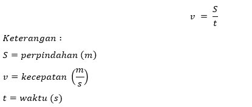
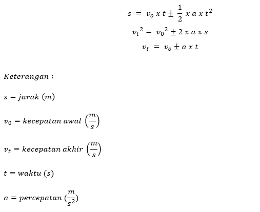

Gerak adalah perpindahan kedudukan suatu benda dari posisi awal. Benda diaktakan bergerak jika mengalami perpindahan. Secara umum gerak terbagi menjadi tiga yakni gerak lurus, gerak melingkar, dan gerak parabola.
Perbedaan kecepatan dan kelajuan : Kelajuan (speed) merupakan besaran scalar yang berarti hanya memiliki nilai.
Kecepatan (velocity) merupakan besaran vector sehingga memiliki nilai dan arah. Dalam menyatakan kecepatan, haruslah menyertakan arah pergerakan benda.
Contohnya : “Partikel X bergerak dengan kecepatan 10 m/s dengan arah 30° terhadap sumbu X positif”
Gerak lurus beraturan merupakan gerak benda pada lintasan lurus dengan kecepatan tetap (a = 0). Persamaan untuk GLB adalah :
Gerak lurus berubah beraturan merupakan gerak lurus dengan kecepatan yang selalu berubah, namun memiliki percepatan yang tetap.
Ingat, karena kecepatan merupakan besaran vector, maka bisa dipengaruhi oleh arah gerak. Maka kita harus menyertakan arah gerak dari benda tersebut. Untuk benda yang dipercepat, kecepatan akhir (vt) akan lebih besar dari v0. Sedangkan untuk benda yang diperlambat, kecepatan akhir (vt) akan lebih kecil dari v0.